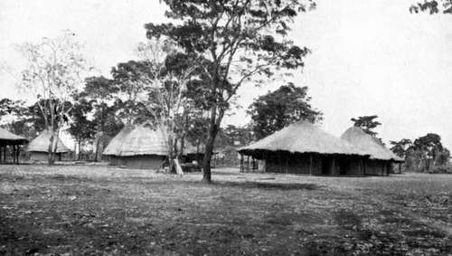

Further Shooting Experiences In Central Angoniland. Part 2
Description
This section is from the book "Wild Life In Central Africa", by Denis D. Lyell. Also available from Amazon: Wild Life in Central Africa.
Further Shooting Experiences In Central Angoniland. Part 2
Bull elands are much taller and heavier than the cows, and the three animals where the male exceeds the female to the most noticeable extent are the elephant, eland, and kudu. The sexes in other game do not appear to vary so much; at least, this is my opinion, which is founded on considerable experience of African game.
The tracks of male elephants and elands are also much longer and broader than those of the cows, but in kudu there is not a great difference, although the bull is slightly larger.
On the 28th I was out again, and saw two warthogs, both of which I hit hard. One ran about 120 yards and fell dead, but the other I could not find, although I spent several hours tracking it. Next day I sent a native headman, named Shauri, with some other men and a lot of dogs, to try to find it, but they returned unsuccessful, so I can only suppose that it was slightly hit, as the 7.9 mm. Rigby-Mauser rifle I generally use makes a very severe wound in all game if the bullet strikes full in the body.
In a further chapter I intend to write a few pages on my experiences with high velocity rifles, as I think it a very interesting subject to all big-game men.
My Permanent Camp In Central Angoniland
On the 29th I transported all my goods from the village to my new camp, as the huts were fairly dry, although they were rather damp and chilly during cold nights. However, large log fires soon dried them, and I was much more comfortable here away from the rats, pigs, and dogs which haunted the village.
The air smelt sweeter, too, for a native village is a dirty odoriferous place, not to mention the filth and dust that is always blowing about.
My camp had taken about a month to build, and the labour necessary cost me £7 10s., and for this moderate amount I had the following huts :
1.—One large round hut 45ft. across the verandahs.
2.—One smaller hut (joined to the former by a passage).
3.—One guests' hut.
4.—Three boys' huts.
5.—One kitchen.
6.—One store.
7.—Two labourers' huts.
8.—One goat and sheep hut (oblong and divided in the centre). 9.—One fowl and pigeon cote. 10.—One large shed for storing horns and skins.
This certainly seems a lot of work, but the smaller huts did not have much time or trouble spent on them, except that I saw that they were strongly made and well thatched, and I mudded them all, and put a coat of grey mud on them so that they would all be the same colour.
When I came from Blantyre I brought a Yao man with me who had come to ask for work. He was a huge fellow, quite 6ft. in height and strong in proportion, and he was a " gay Lothario " with the women and particularly fond of native beer.
This he used to buy with money and barter for meat, but one day when I was out shooting he left his work and, in sight of other men working for me, paid several visits to a stand where I had stored a lot of half-cooked meat.
Then he left his work and went off to barter the meat for beer, and he thus got very tipsy. Ubibu, the name he went by, was when sober a kind of mountebank, as he used to make a fool of himself and try to make the natives laugh.
On getting back to the village from the bush where I had been shooting, the natives told me that Ubibu had stolen the meat, so I sent to the place where he ought to have been working to call him, but he was absent.
At last he was found, and came swaggering up in a very cheeky manner and asked what I wanted with him.
I then asked him why he had left his work and why he had had the impertinence to steal my meat, when he usually got a very plentiful share, as he was strong and accustomed to carry heavy loads.
He was very insolent, so I lost my temper, very naturally, and told some men to get hold of him, for he had moved off, shouting as he went. The men came back with him ; at least, he was walking in the centre singing and shouting.
Now, I did not wish to take the law into my own hands, but I knew from past experience that if he was allowed to go without being hurt 1 would lose respect and control ; so I told the men to lay him down and instructed my head capitao, Nterimanja, to give him eight strokes with the thin end of a knobkerry.
Nterimanja, having served as an askari (soldier), was a pretty lusty fellow, and he knew his duty, so he laid on pretty hard, but Ubibu got up smiling, and went off cursing Nterimanja, who was a Yao like himself, and saying he would bewitch him. As Ubibu had been paid for his previous month's wrork the day before, there wTas nothing due to him, so I told him he was dismissed.
At that time there were several natives returning from the South African mines with a good deal of money and a box of clothes, and Ubibu met one of these fellows in an adjoining village, and this man—after several days had elapsed—persuaded him to go to the Boma (Government office) and report me.
This would have been all right if Ubibu had seen fit to tell the truth, but he lied horribly and informed the Assistant Resident that I had given him forty strokes with the chikoti (hide whip, called sjambok in South Africa). Now, I did not even possess a chikoti at that time, but the Assistant Resident did not know this, and he believed Ubibu's story, although he was a clever official and a very sensible man.
I wonder why he did not examine the man's body, for a native who got even twenty strokes would likely be unable to walk well for some time. Thinking the case was too serious for him to adjudicate on, he gave Ubibu two shillings and a letter, and sent him to Lilongwe, the head station of Central Angoniland, and some seventy miles off. The Resident (or Magistrate) passed Ubibu on the road without getting the letter, but I had gone to Fort Manning, where I had seen both the Resident and Assistant Resident, and told them the true facts of the matter, so, on the Resident getting back to Lilongwe, he sent back Ubibu to Fort Manning. On the day the case was heard I gave the knobkerry to the owner to carry off to the Boma, as he was a witness. All my witnesses admitted that Ubibu had been beaten with the knobstick, and when this was produced it was found to be badly splintered. This, it was easy to notice, had been done on a rock, as the marks showed ; but it also shows how natives will often not only lie, but will combine to blacken a case. The court capitao and interpreter belonged to the same tribe as Ubibu, and I heard afterwards that when I was sitting with the Assistant Resident in his house, before we went up to his office, the interpreter, at the instigation of Ubibu, hammered the knobkerry on a rock they were sitting on. As I had taken the law into my own hands, very foolishly, but I think very naturally, I had the pleasure of paying Ubibu three shillings in cash and refunding the two shillings given him by the Assistant Resident to pay for his food on the road to Lilongwe.
Continue to:
- prev: Chapter III. Further Shooting Experiences In Central Angoniland
- Table of Contents
- next: Further Shooting Experiences In Central Angoniland. Part 3